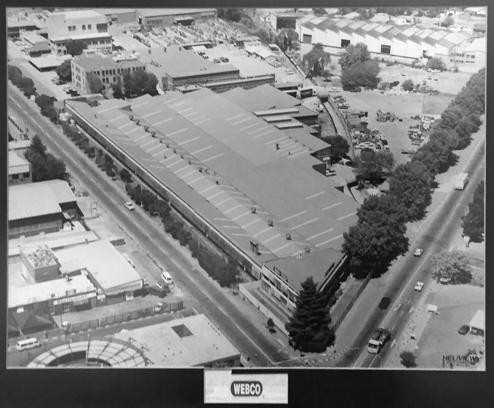
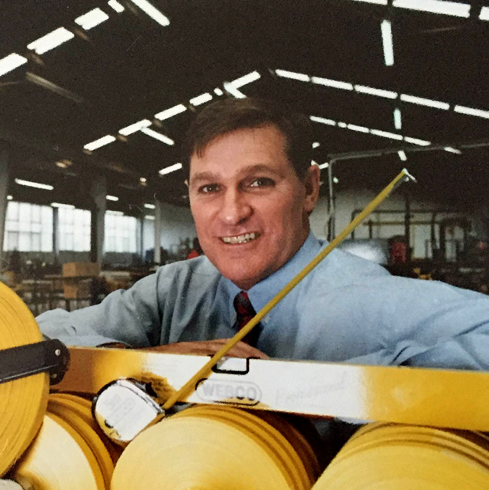
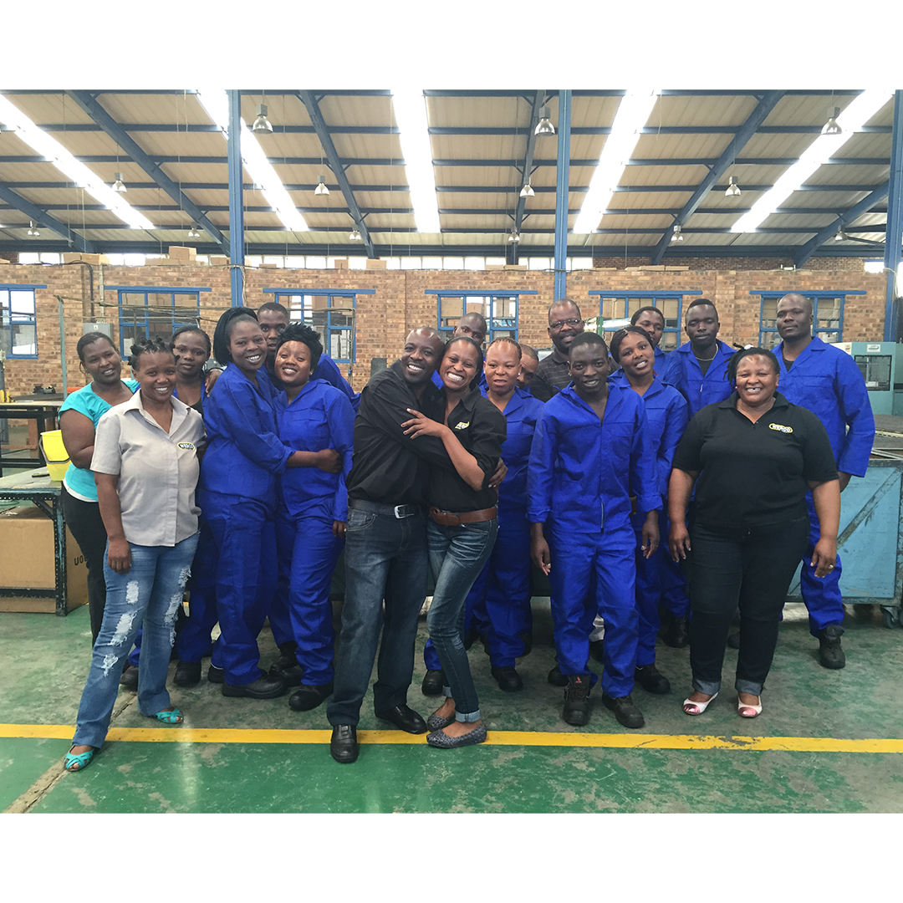

We Supply

Mining Tools
Manufactured to the highest International Specifications and standards, ensuring high quality.

Measuring Tools
Our measuring range is designed and engineered for reliability, accuracy and durability.

Survey Tools
Our hand tool range caters for your every need, Mining, Surveying, DIY, Gardening etc. Check Our catelogue.
Our History
Webco Tools is a wholly owned South African Company. The company was established as Burns Rivers & Co (Pty)Ltd in 1905 and has been trading as a mining supply company ever since. In April 1990 Webco Tools was launched as a registered trademark and brand due to Craig Webster's diversification from being purely a mining supply company for 85 years.
Our Team

Craig Webster
Director
Nicky Bailey
General Manager
Popi Kgotle
Sales Manager
John Tshuma
Production Manager
Alfred Nku
Logistics & Deliveries

Plant Staff
Manufacturing